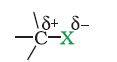

Since halogen atoms are more electronegative than carbon, the carbonhalogen bond of alkyl halide is polarised; the carbon atom bears a partial positive charge whereas the halogen atom bears a partial negative charge.

Since the size of halogen atom increases as we go down the group in the periodic table, fluorine atom is the smallest and iodine atom, the largest. Consequently the carbon-halogen bond length also increases from C—F to C—I. Some typical bond lengths, bond enthalpies and dipole moments are given in Table 10.2.
Table 10.2: Carbon-Halogen (C—X) Bond Lengths, Bond Enthalpies and Dipole Moments
| Bond | Bond length/pm | C-X Bond enthalpies/ kJmol-1 | Dipole moment/Debye |
| CH3–F | 139 | 452 | 1.847 |
| CH3– Cl | 178 | 351 | 1.860 |
| CH3–Br | 193 | 293 | 1.830 |
| CH3–I | 214 | 234 | 1.636 |